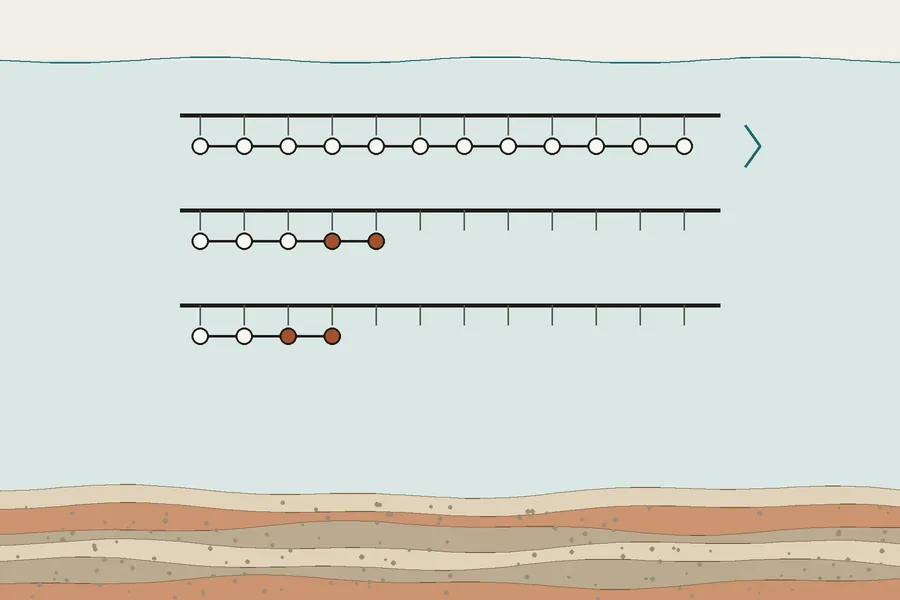

Copying that stops early could leave mostly error-free RNA copies, because a mistake stalls the copy
Göppel T, Obermayer B, Chen IA, Gerland U · eLife 15:e72856
In a model with measured rates, a copy with an early mistake slows down, so short copying windows repeated in cycles could make exact copies of strands up to about 50 letters.
Before enzymes, RNA had to be copied by chemistry alone, and that chemistry gets roughly one letter in ten wrong. At that rate, long working sequences would soon be lost to errors. This team built on a known quirk: one mistake tends to bring more mistakes and slows the copy right down. So if copying runs only for a short time, the copies that finish are mostly the clean ones. In their model, warm and cool cycles that keep restarting the copying could make exact copies of strands up to about 50 letters long.
Stochastic (Gillespie) and analytical model of enzyme-free, template-directed primer extension with parameters from experiments. In the open 2021 preprint: mean error probability per step 0.08 (DNA) and 0.17 (RNA); after a first mismatch the error probability rises more than sevenfold (DNA) or about threefold (RNA) and extension stalls by one to two orders of magnitude; a second mismatch slows it about sixfold more. A finite copying window trades yield for fidelity; in cyclic environments (temperature cycles that melt products off templates) fidelity and yield rate rise together if templates are not too long. Time to an exact copy grows roughly exponentially with length; set against estimated hydrolysis lifetimes, the published abstract reports exact copies up to about 50-mers. Main results use DNA parameters. No new experiments. The eLife page blocks scripted reading, so authors, venue, date and abstract numbers were checked on Crossref and eLife's article XML, and the parameter values come from the preprint (bioRxiv 10.1101/2021.08.06.455386).
What we take from it. For the copying step in our RNA world models (tasks #2 and #12) we add kinetic error filtering as an option: a stall factor after a mismatch and a finite copying window per cycle, and check whether it moves the error threshold far enough to keep a ribozyme-length sequence. It is a model, so it enters as a hypothesis with its parameters, not as a measured step.